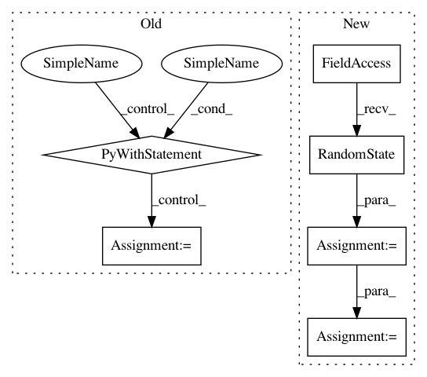

699ce9a0d6e19852f5d6171f86265b718bc860f8,python/src/nnabla/utils/nnp_graph.py,NnpLoader,__init__,#NnpLoader#Any#Any#Any#,458
Before Change
if ext == ".nnp":
// Load parameters to self._params rather than
// loading to global current scope.
with nn.parameter_scope("", self._params):
proto = _load_nnp_to_proto(filepath)
elif ext in (".nntxt", ".prototxt"):
proto = _load_nntxt_to_proto(filepath)
else:
raise NotImplementedError(
After Change
// The loaded parameters will be copied to the current
// scope when get_network is called.
self._params = scope if scope else OrderedDict()
self.g = nn.graph_def.load(
filepath, parameter_scope=self._params, rng=np.random.RandomState(1223), extension=extension)
self.network_dict = {
name: pn for name, pn in self.g.networks.items()
}
def get_network_names(self):
In pattern: SUPERPATTERN
Frequency: 3
Non-data size: 6
Instances
Project Name: sony/nnabla
Commit Name: 699ce9a0d6e19852f5d6171f86265b718bc860f8
Time: 2021-03-01
Author: woody.li@sony.com
File Name: python/src/nnabla/utils/nnp_graph.py
Class Name: NnpLoader
Method Name: __init__
Project Name: sony/nnabla
Commit Name: 0accec731f7451091ef8844db1ab5df3b3d88e6f
Time: 2017-10-26
Author: Kazuki.Yoshiyama@jp.sony.com
File Name: examples/vision/cifar100/multi_device_multi_process_classification.py
Class Name:
Method Name: train
Project Name: sony/nnabla
Commit Name: 0accec731f7451091ef8844db1ab5df3b3d88e6f
Time: 2017-10-26
Author: Kazuki.Yoshiyama@jp.sony.com
File Name: examples/vision/cifar100/multi_device_multi_thread_classification.py
Class Name:
Method Name: train